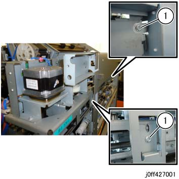
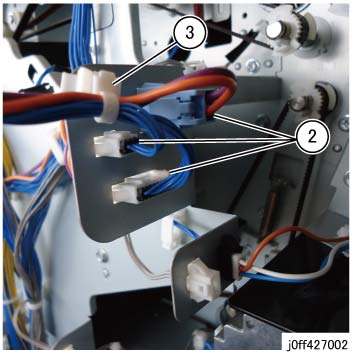
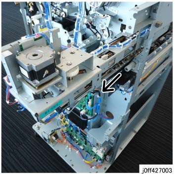
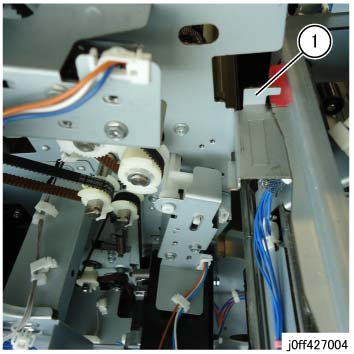

REP 27.1.1 打孔 组件 (选件) 
参考 PL:PL 27.1
Removal

执行IOT关机步骤. 确认电源已关闭并拔掉电源插头.
拆卸后上盖板组件. (PL 27.16)
拆卸 打孔 Box (选件). (PL 27.1)
拆卸 打孔 组件.
从 左侧, 拆卸 安装 螺钉（x2） of 打孔 组件. (图 1)

(图 1) ff427001
从后面 侧面, 断开连接器（x3）. (图 2)
从后面 侧面, 释放 Push Tie. (图 2)

(图 2) ff427002
从后面 侧面, 拉出 和 拆卸 打孔 组件 in the 方向 的 arrow. (图 3)

(图 3) ff427003

To prevent 打孔 Encoder 和 打孔 Encoder 传感器 从 getting 损坏的 by direct contact 和/与 a hard 表面 这样的 as the floor, place the removed 打孔 组件 和/与 打孔 电机 侧面 facing up.
安装
安装 到 hook 和 push it in. (图 4)

(图 4) ff427004